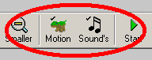
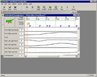
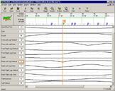
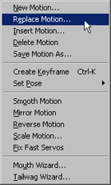
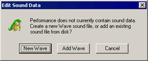

3.0 Workbook Files
PLEO performances or skits are composed of two
elements: Body motions and Sound. MySkit stores these in a
PLEO workbook keeping them together. Workbooks make copying
& sharing your skits easier.
A given element of a workbook (motion or sound) can be
reused by many
different skits
(there
is no limit), but each skit requires a separate workbook.
3.1 Creating New Performances
|
Create a new performance by clicking "New" on the
toolbar.
- Click the toolbar "New" button.
A new set of PLEO editors appears.
- Edit the elements. Use the
motion and sound editors.
- Save action file. Click
Save in the
toolbar.
|
To
remove unwanted elements (motion or sound) from a new skit, simply
close the editor
window. On new actions, this removes the element from the
action. Usually closing an editor just hides elements, and you
must
remove them explicitly.
To reuse elements from another performance, see:
"Reuse
Existing Files in a Performance".
|
|
3.2 Navigating the Editor Windows
|
MySkit can open two editors at
once for a performance:
Motion and Sound. You can maximize an editor to fill
the workspace, arrange the editors from the Window menu,
or size them manually.
To bring an editor forward, click on the
Motion/Sound
toolbar buttons. The
small checkmark shows the performance contains that element
type. No checkmark means the performance doesn't contain
that element type.
Clicking the toolbar buttons twice (or more)
toggles
that
editor between normal and maximized views (see below):

|

|
| Normal View |
Maximized View |
|
3.3 Reuse Existing Files in a Performance
You can share elements (such as a
motion file) across two or more performances.
After creating a new skit, select "Replace" from the Motion, or
Sound menu (whichever needs replacing). Pick the file you
want, and you are done!
There are no restrictions on how many performances can reuse a single
element. Doing so can save lots of space on PLEO's flash card,
and is common with sound files.
|
 |
3.4 Add Elements to a Performance
If a performance is missing an
element,
you can add it easily. Just click the associated toolbar button
(Motion or Sound). Note: If
the performance already has a sound element, clicking the toolbar
brings it to the
foreground
To replace an element, see "Reuse
Existing Files in a Performance ".
The dialog shown to the right appears when adding a sound
file. MySkit prompts to either create a new Wave
file, or add an existing sound file from disk.
|
 |
3.5 Remove Elements from a Performance
If you decide a performance doesn't need an element (say a
sound file), you can remove it from the performance. Select
"Delete"
from the appropriate Motion, or Sound menu.
The motion/sound element file is NOT deleted
from disk. MySkit simply doesn't include it with the current
performance anymore. If you change your mind, you can add
it back later -- no harm done.
Note: If you delete all elements,
MySkit closes the performance.
|